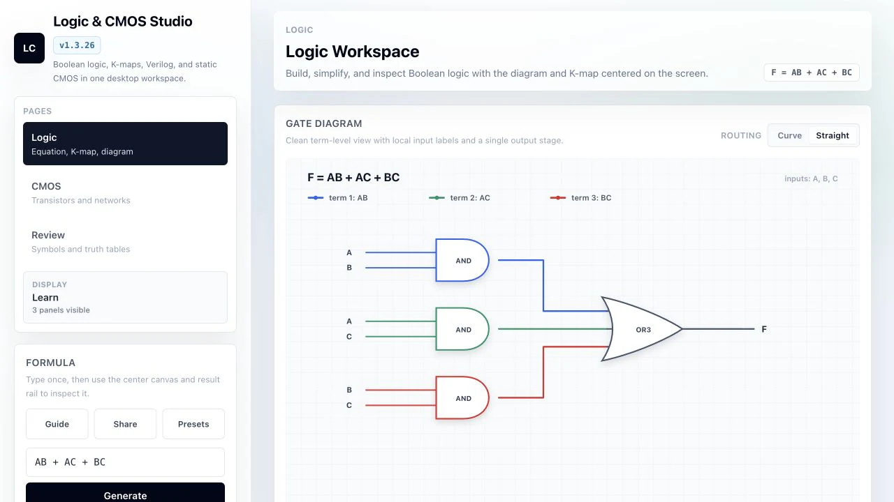
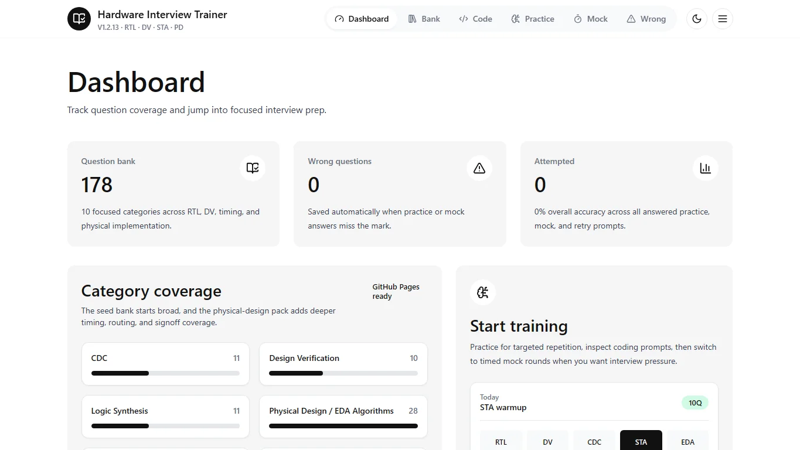
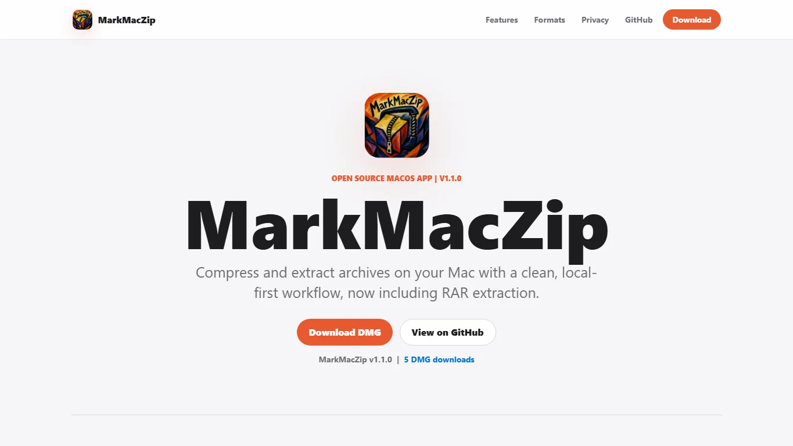
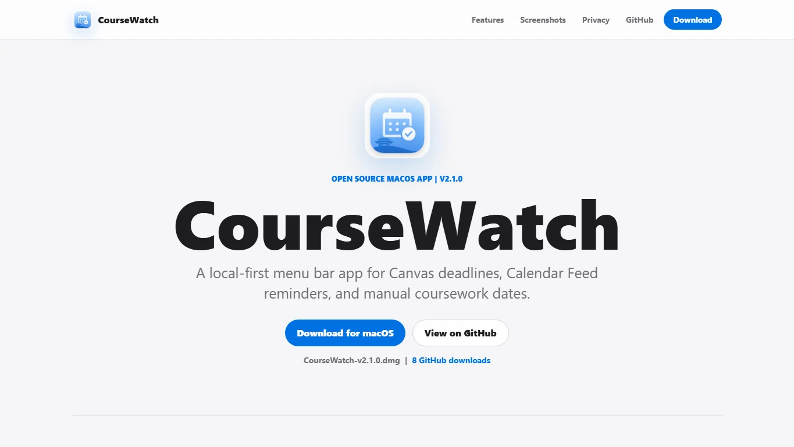
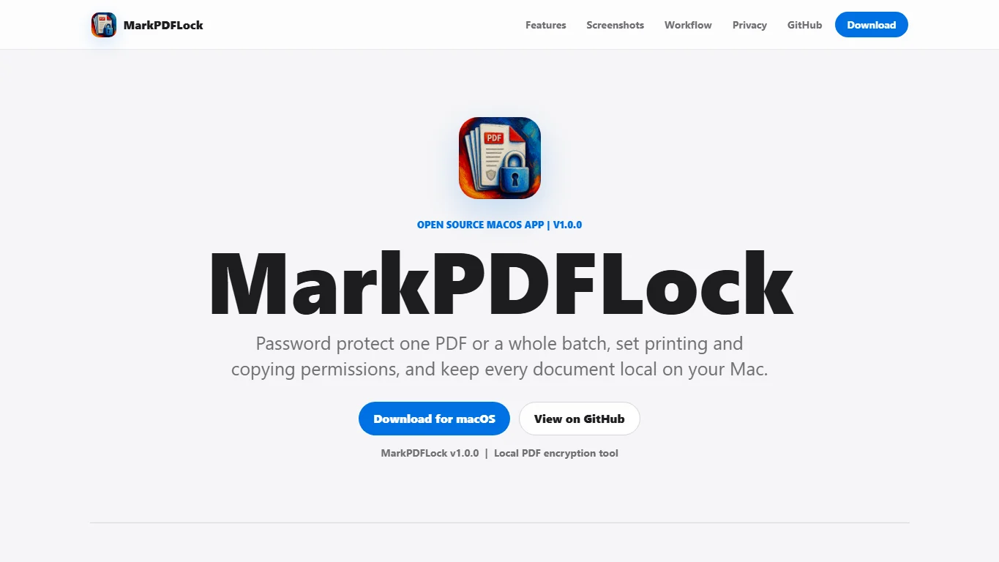
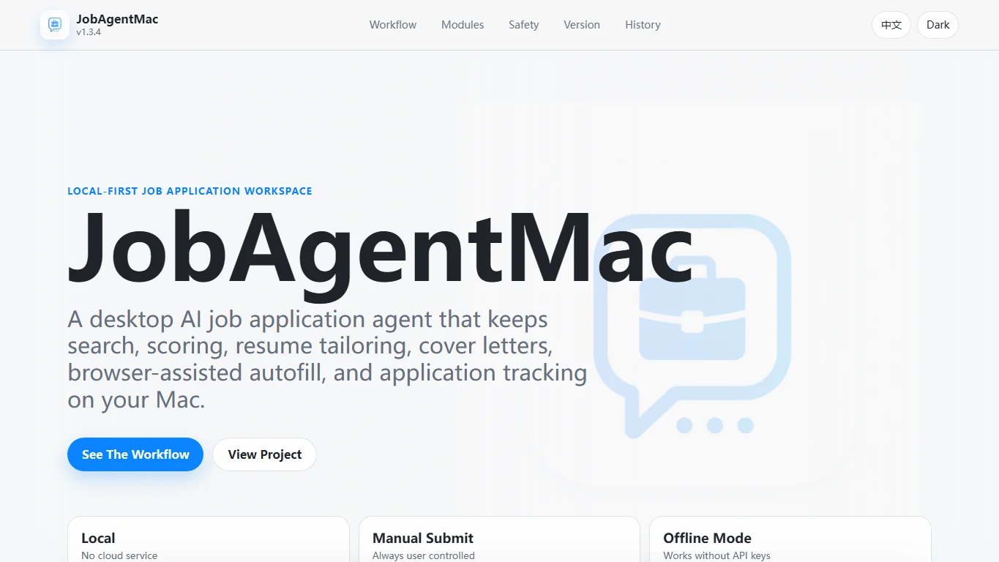
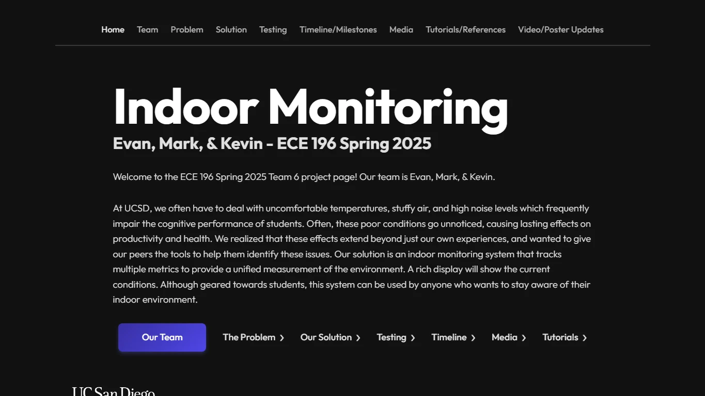
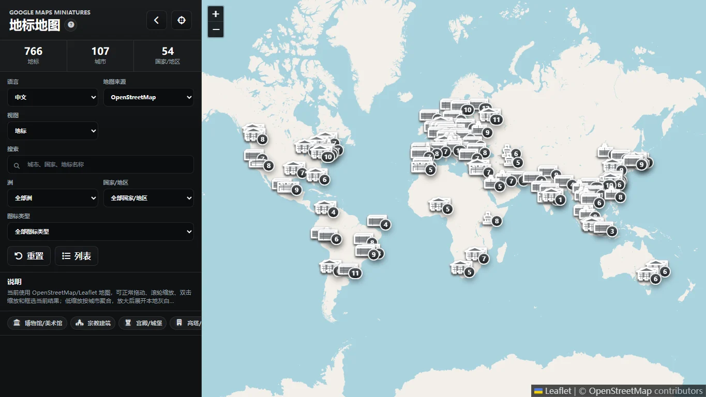
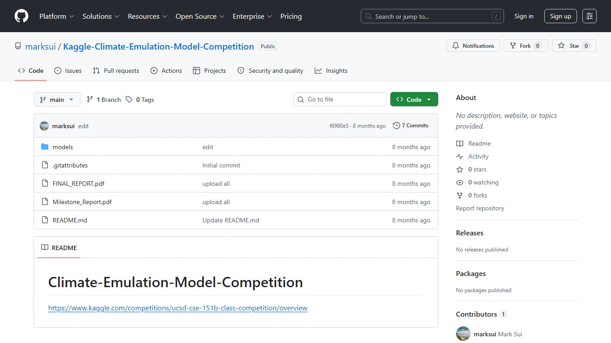

Tools that turn architecture and circuit concepts into repeatable workflows.
Projects
Engineering tools with hardware instincts.
A focused index of public builds across hardware learning, native utilities, embedded sensing, interactive maps, and data systems. I care most about projects that make technical reasoning clearer, faster, and more concrete.
Public Builds
10+
Signal
Hardware-minded UX
Primary Stack
Swift / JS / C / RTL
Small focused apps for files, documents, coursework, and everyday productivity.
ESP32 and C-based monitoring work that connects hardware signals to usable feedback.
Browser experiences for exploring places, landmarks, and model outputs.
Filter by signal
Jump to the kind of engineering work you want to inspect.
Showing all projects.
Featured Case Studies

Best signal for RTL + CMOS tooling
Logic & CMOS Studio
Browser tool for Boolean logic, truth tables, K-maps, simplified equations, Verilog, and static CMOS pull-up / pull-down schematics.
Problem
Logic classes often split truth tables, K-maps, Verilog, and transistor reasoning into separate tools.
Build
One browser studio connects Boolean input to simplified equations, generated HDL, and static CMOS views.
Signal
Shows hardware reasoning across abstraction layers instead of stopping at a polished interface screenshot.
Digital Logic
CMOS
Verilog
K-map
Implementation notes
Built around
logic-to-layout reasoning
Interface goal
compare views quickly
The project emphasizes traceability between Boolean input, minimized logic, generated Verilog, and static CMOS structure.

Structured practice for hardware interviews
Hardware Interview Trainer
Local-first interview practice app with a large question bank, mock rounds, review history, progress analytics, and JSON import / export.
Problem
Hardware prep is hard to repeat when questions, missed concepts, and timing live in scattered notes.
Build
Timed sessions, review history, analytics, and import/export turn practice into a durable loop.
Signal
Local-first data keeps the tool useful across multiple sittings without making prep feel heavy.
Hardware Prep
Analytics
Local-first
Implementation notes
Built around
repeatable practice loops
Data model
portable local progress
Question sessions, missed-question review, and analytics are designed to keep hardware interview prep structured over multiple sittings.

Native utility with privacy-first file handling
MarkMacZip
Archive utility for macOS that compresses and extracts common formats, supports password workflows, and keeps files on device.
Problem
Archive workflows are frequent enough to deserve a focused native utility instead of a loose script.
Build
Compression, extraction, passwords, job history, and releases are wrapped in a Mac-first interface.
Signal
The project balances product polish with privacy-first local file handling.
macOS
Compression
Privacy
Implementation notes
Built around
native file workflows
Product focus
local-only archive handling
The app frames compression, extraction, password handling, and release delivery as a polished desktop utility rather than a script wrapper.
No featured projects match this filter.
Supporting Builds

Coursework workflow
CourseWatch
Canvas deadline tracker for the macOS menu bar, built as a local-first coursework companion.
- Keeps deadline checks close to the operating system instead of another browser tab.
Details
Focused on compact status visibility, deadline scanning, and a native-feeling menu bar workflow.

Document privacy
MarkPDFLock
Password-protects PDFs on Mac with batch export and local-only document handling.
- Frames a common document-security task as a fast native utility.
Details
Built around a narrow document workflow: select PDFs, apply protection, and export without sending files elsewhere.

Private workflow assistant
JobAgentMac
Offline job-application assistant focused on keeping application workflow data on device.
- Prioritizes local storage for sensitive job-search notes and status tracking.
Details
Organizes application state, notes, and follow-up context with an offline-first privacy posture.

Embedded sensing
Indoor Monitoring
ESP32 environmental monitor for CO2, comfort metrics, and live indoor status display.
- Connects sensor data to clear room-status feedback and practical thresholds.
Details
Pairs embedded sensing with a simple status interface so readings are useful at a glance.
Geographic exploration
China Travel Map
Scenic-area map with search, language switching, images, and region highlights.
- Combines location browsing, multilingual labels, and image-backed place context.
Details
Uses map browsing and structured place metadata to make scenic-area exploration more visual and searchable.

Dataset browser
Google Maps Landmark
Static landmark map for the Google Maps miniatures list, using Leaflet for browsing and filtering.
- Turns a landmark collection into a searchable, map-based browsing interface.
Details
Transforms a static landmark list into an interface with geographic context, filtering, and fast inspection.

Model experimentation
Climate Emulation Model
Kaggle competition work around climate emulation modeling and machine learning experimentation.
- Documents a model-development workflow around climate emulation data.
Details
Captures experimentation around climate model emulation, data preparation, and notebook-based iteration.
No public tools match this filter.